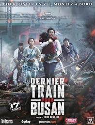

est un film d'horreur sud-coréen réalisé par Yeon Sang-ho, sorti en 2016. Quelques mois après la sortie du film, un préquel animé, Seoul Station, est conçu par le même réalisateur. Une suite est également réalisée en 2020, Peninsula. Un chauffeur de camion est arrêté sur une petite route par des hommes portant des tenues de protection contre les risques biologiques. Ils désinfectent son véhicule avant de le laisser passer. Peu après, il percute une chevrette qui, bien que morte, se relève. Seok-woo, un courtier en bourse, vit à Séoul avec sa fille Soo-ahn, mais il est peu attentionné envers elle : il ne va pas à une fête à l'école où elle doit chanter, il lui offre un cadeau pour son anniversaire qu'il lui avait déjà offert pour la journée des enfants. Soo-ahn lui dit alors qu'elle veut aller voir sa mère à Busan dès le lendemain. Le lendemain, ils embarquent dans le Korea Train Express (KTX), un train rapide qui doit les amener de Séoul à Busan. Juste avant le départ, une jeune fille qui semble malade réussit à monter dans le train ; et alors que le train quitte la gare, celle-ci est envahie par un groupe d'individus qui attaquent le chef de quai.